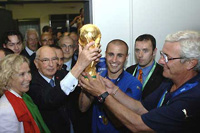

Футбо́л (англ. football от foot «ступня» + ball «мяч») — командный вид спорта, в котором целью является
забить мяч в ворота соперника ногами или другими частями тела (кроме рук) большее количество раз, чем
команда соперника. В настоящее время самый популярный и массовый вид спорта в мире.Есть 17 официальных
правил игры, каждое из которых содержит список оговорок и руководящих принципов. Эти правила
предназначены для применения на всех уровнях футбола, хотя есть некоторые изменения для таких групп, как
юниоры, взрослые, женщины и люди с ограниченными физическими возможностями. Законы очень часто
формулировались в общих чертах, которые позволяют упростить их применения в зависимости от характера
игры. Правила игры публикуются в ФИФА, но поддерживаются Международным советом футбольных ассоциаций
(IFAB)[37].